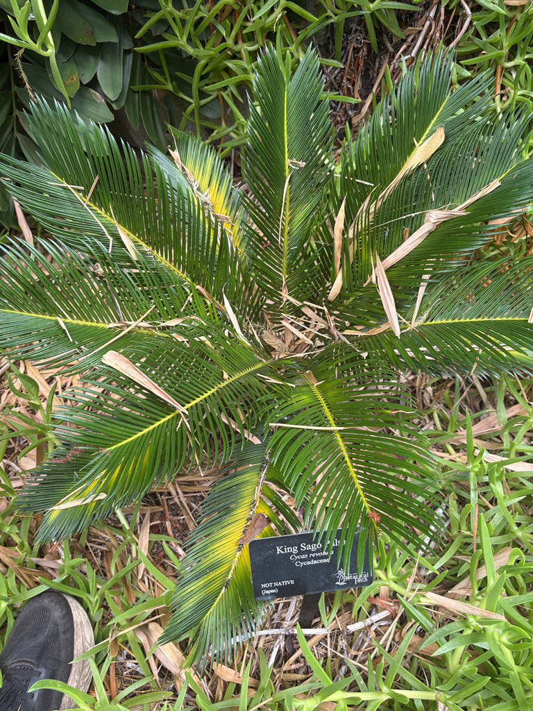

- The name on the label is a small lie: this plant is not a palm. It is a cycad — a gymnosperm more closely related to conifers than to any palm. The resemblance is entirely coincidental, a case of two unrelated lineages arriving at a similar shape.
- Cycads as a group predate the dinosaurs. The fossil record puts them in the Permian, roughly 280 million years ago — which means this plant's ancestors were already ancient when Tyrannosaurus rex appeared.
- The species name revoluta is Latin for 'rolled back,' describing exactly what the leaflets do: their margins curl downward along the length of each narrow blade. The name is both precise and easy to verify just by looking.
- These plants grow at a pace that rewards patience. One to two inches of trunk per year is typical — a mature specimen with several feet of trunk has been quietly at work for decades.
Native to the Ryukyu Islands and Kyushu — the subtropical and tropical southern islands of Japan — where it grows on rocky, well-drained slopes and coastal hillsides. It is the only cycad species native to Japan.
Carl Peter Thunberg formally described the species in 1782 after encountering it in Japan, where it had long been cultivated in gardens and used as a landscape ornamental. It reached Western horticulture in the 19th century and became one of the most widely cultivated cycads in the world.
In Florida it arrived as an ornamental and has been planted across the state for well over a century. UF/IFAS lists it as suitable for USDA Hardiness Zones 8B through 11, giving it a broad planting range across nearly the entire state.
- Despite sharing a common name, the 'sago' in King Sago Palm refers to a starchy food product, not a shared lineage with the true sago palm (Metroxylon sagu), which is an unrelated feather palm from Southeast Asia.
- The starch can be extracted from the pith of Cycas revoluta, but only after careful repeated washing to remove the plant's potent toxins — a laborious process that made it a true famine food in Japan, not an everyday ingredient.
- The root system of Cycas revoluta includes specialized structures called coralloid roots — short, upward-growing root clusters that sit near the soil surface and harbor nitrogen-fixing cyanobacteria. This is an ancient symbiosis: cycads have been partnering with cyanobacteria for hundreds of millions of years, well before most flowering plants existed.
- Pollination in Cycas revoluta is a mix of beetle and wind, and the plant uses both chemistry and heat to manage it. When male cones are ready to release pollen, they heat up and produce a concentrated burst of volatile organic compounds — primarily estragole — that first attract beetles and then, as the heat and scent intensify, drive them off toward waiting female cones.
- It is an active push-pull system, ancient and effective, with no flowers involved at all.
In Florida cultivation, the King Sago Palm offers modest wildlife value. When male cones are active, the heat and volatile compounds they produce attract small beetles and other generalist insects that serve as incidental pollinators. There is no significant nectar resource and no recorded use as a larval host by Florida butterflies or moths.
Visitors interested in cycad wildlife interactions should visit the park's native coontie (Zamia integrifolia) — Florida's only native cycad and the sole larval host plant of the Atala butterfly, a striking species that came close to extinction before coontie plantings helped it recover. The two cycads are unrelated neighbors with very different ecological roles.
Cycas revoluta is dioecious — male and female reproductive structures are produced on entirely separate plants. Propagation is primarily by seed, though offsets (pups) that sprout at the base of mature plants are commonly separated and grown on in cultivation.
Male plants produce a large, upright, elongated cone — sometimes 12 to 18 inches long — that warms noticeably and releases a strong scent when shedding pollen. Female plants produce a looser, rounded cluster of modified leaves (megasporophylls) at the crown center, each bearing large seeds along their margins. The cone-bearing structure on the female is less obviously cone-like than the male's.
Seeds are large — about an inch across — and ripen to a bright orange-red. Each is borne on the margins of the female megasporophylls and is hard, heavy, and acutely toxic. They are not dispersed by birds or wildlife in Florida; the plant relies on seeds falling near the parent or on human propagation.
Leaves emerge in a single coordinated flush — a 'break' — once or sometimes twice a year, all unfurling from the crown at the same time. Each leaf is a stiff, arching frond up to two to three feet long, with narrow, deep-green, glossy leaflets arranged in pairs along a central rachis. Leaflet margins roll downward — the revolute curl the species is named for.
Each leaflet tip ends in a sharp rigid point.
The trunk is solitary and columnar, covered in a rough, patterned armor of old leaf-base scars, and grows extremely slowly — one to two inches per year. Older plants often produce offshoots (pups) from the base or along the trunk; these can be removed and rooted to produce new plants. Trunks can eventually branch when repeatedly damaged or very old.
Start with the crown: a symmetrical, starburst rosette of stiff, arching fronds radiating outward from a single growing point. Run your eye down the fronds to see the narrow, paired leaflets with their downward-rolled margins and sharp tips — worth noting before you reach in.
The trunk below the crown is covered in a geometric pattern of diamond-shaped leaf scars; on older plants it can be a foot or more in diameter. If a cone is present and the plant is male, it will be an elongated, upright structure rising above the frond bases; on a female, look for the central cluster of leaf-like structures with large orange seeds visible at their margins.
This plant is seriously toxic — to people, dogs, cats, and horses. All parts contain cycasin and related compounds, with the large orange seeds carrying the highest concentration. The ASPCA estimates that ingestion is fatal in up to 50 to 75 percent of cases in dogs even with treatment; ingesting even a single seed can be lethal.
If a pet has eaten any part of this plant, treat it as an emergency: call your veterinarian or the ASPCA Animal Poison Control Center at (888) 426-4435 immediately. Historically, the starchy pith was used as a famine food in Japan, but only after an intensive washing process to remove the toxins — it is not edible in any practical sense and should not be consumed.
The sharp-tipped leaflets are also a physical hazard; avoid brushing bare skin against the fronds.
The cycad aulacaspis scale (Aulacaspis yasumatsui), an introduced pest, is one of the most serious threats to Cycas revoluta in Florida. A heavy infestation can kill the plant; early detection — look for white, waxy encrustation on stems, leaf undersides, and roots — makes management considerably more effective. UF/IFAS EDIS publication IN253 covers identification and control.
A conservation paradox worth knowing: cycads are the most threatened plant group on Earth, with more than two-thirds of all species facing extinction according to IUCN Red List data. Yet Cycas revoluta is officially classified as Least Concern — because millions of specimens in global cultivation buffer it against global extinction risk.
The safety of the species as a whole, however, does not extend to its wild populations. The same cycad aulacaspis scale that plagues landscapes in Florida has invaded the Ryukyu Islands — the plant's only native range — reaching Okinawa-jima and causing documented local extinctions in northern Amami-Oshima as recently as 2023 and 2024.
The plant that feels permanent in every Florida garden turns out to be genuinely vulnerable where it actually belongs.
The King Sago Palm is frequently planted near walkways for its symmetrical, tropical look — a fine choice architecturally, but one worth reconsidering if dogs or young children regularly use the space. The orange seeds are visually appealing and fall within easy reach.

- © Randall Carter (CC-BY-NC), via iNaturalist